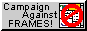
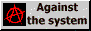

🖖 Hello! Open source enthusiast from Leningrad oblast here
Interactive Visual Periodic Table
Stress checker for Russian State Exam preparation
The first (and i hope the last) project in brainfuck. Basically, printer of text emoji and some tables
Some school project about writing low-level code in order to create some sort of faster grep. Complete failure
Tyler Durden quotes pack for forune-mod
Tyler Durden Russian quotes pack for forune-mod
Hamster Combat cheat (autoclicker) browser script
Chromium extension profanity filter
Book on Solar System objects. I am interested in astronomy, so i decided to write some notes on solar system objects, starting with Mercury. Later that website was converted into LaTeX book and constellations were added. Now it is abandoned as there is no use to it; though astronomy & science fiction are still of my interest
Digital subscription management web-based database. Created as a part of outsource project; now valuable as a template. SQLAlchemy, alembic, aiohttp & PostgreSQL connector used
CSV files pretty printer
All dotfiles i have ever needed are stored here, including bspwm, polybar, sxhkd, bash, neovim, kakoune, configuration.nix. One can use GNU stow tool to install them
checkout my tasks solutions page:
if statistics are no more loading, consider reloading this page. If still nothing works, then it means that monthly request limit is out

